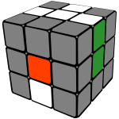
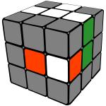

Notation


The Rubix cube should be held with the white side facing upwards (the white side is the side which has the white centre square).
Each letter below represents the move shown in the corresponding image vs a solved cube.
U2 means to turn the U face twice in either direction.
Create a White Cross
Solving the white edges is intuitive and quite easy because there are not so many solved pieces you have to pay attention to. In most cases you just simply rotate the piece to where it is supposed to be.
Below are three examples of cube orientations which require the corresponding algorithm to place the white edge piece into the correct position.
F - R' - D' - F2
F' - R' - D' - R - F2
R' - D' - R - F2
Fill in the White Corners

The next step is to complete the white face by filling in the corners so that our cube looks like the image above.
This stage can also be fairly intuitive once you familirize youself with the cube.
The examples below show the alogorithms required to complete this step.
R' - D' - R - D
F - D - F'
R' - D2 - R - D - R' - D' - R
Complete the middle layer
At this point we need to turn the cube upside down so that the white face is now facing downwards.
There are two algorithms to learn for this step. To start, line up an edge piece so that the colour facing you matches the centre colour.
Perform the algoritm necessary depending on whether the piece needs to go to the left of the right.
U - R - U' - R' - U' - F' - U - F

U' - L' - U - L - U - F - U' - F'